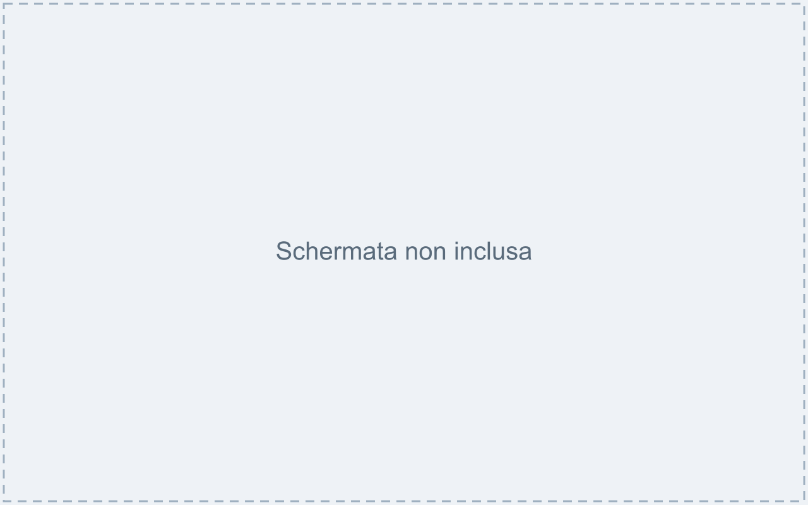
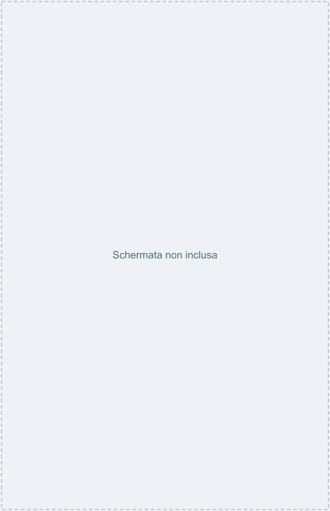
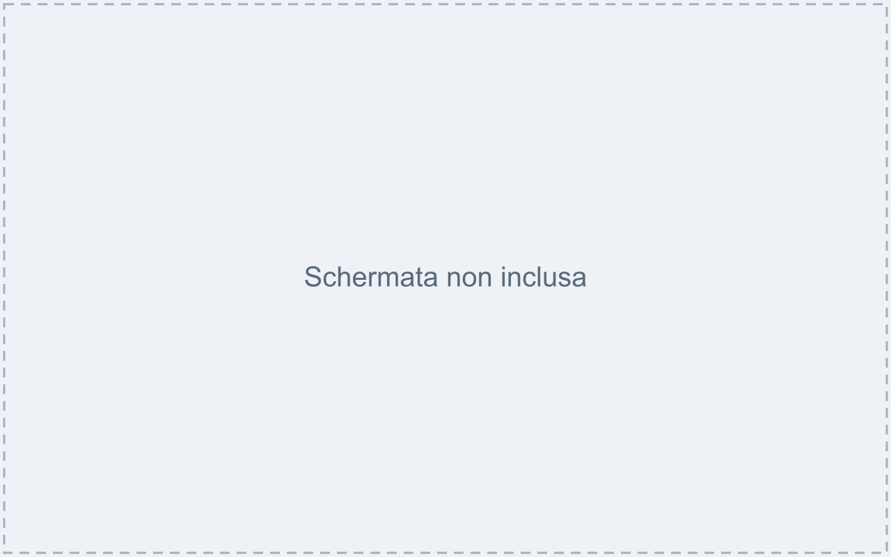

Comune di Esempio · Servizio Sistemi Informativi (esempio da adattare)
Hai un problema con il computer, la stampante, la posta o un programma? Non telefonare e non scrivere mail: apri una richiesta dal portale. Così niente si perde e puoi vedere a che punto è.
Indirizzo del portale: https://portale.esempio.it/assistenza (da salvare nei preferiti).


In «Le mie richieste» vedi tutte le tue richieste e il loro stato.
| Stato | Significa |
|---|---|
| In attesa | Abbiamo ricevuto la richiesta: un tecnico la prenderà in carico a breve. |
| In lavorazione | Un tecnico ci sta lavorando. |
| In sospeso | Serve qualcosa (per esempio una tua risposta). |
| Risolta | Il problema risulta risolto. Se non è così, scrivi un messaggio. |
| Chiusa | Per un nuovo problema apri una nuova richiesta. |

Guida d'esempio con dati inventati, distribuita con il progetto Assistenza Portale (licenza EUPL-1.2). Adattala al tuo ente.